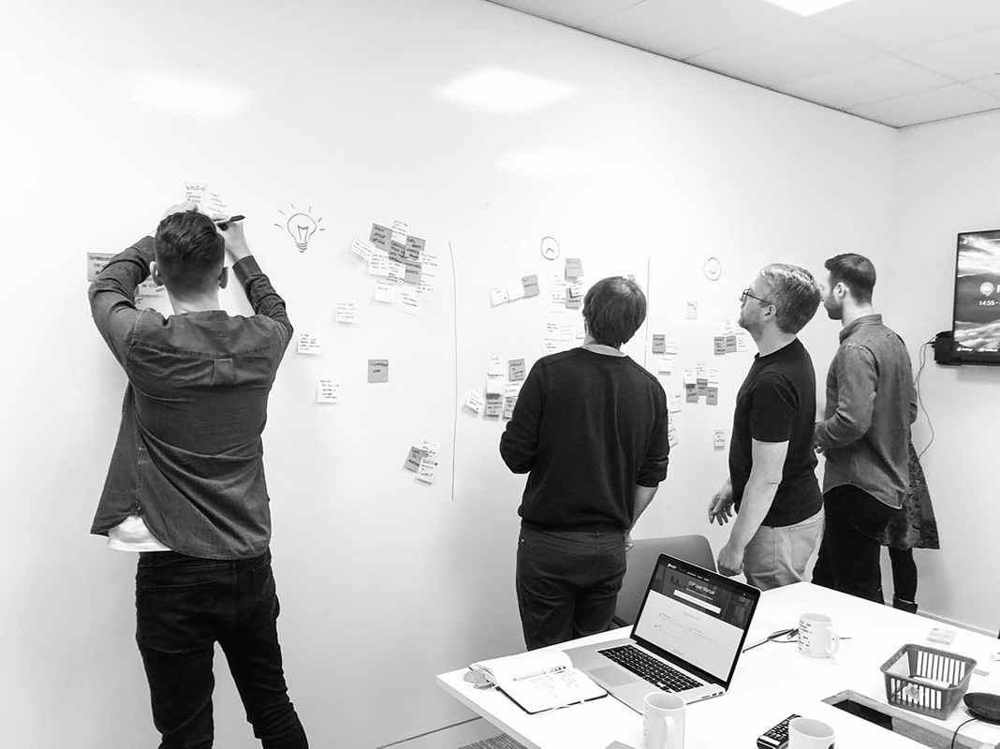
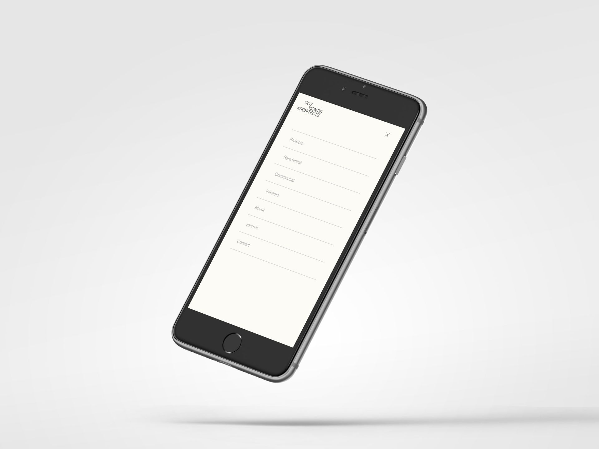
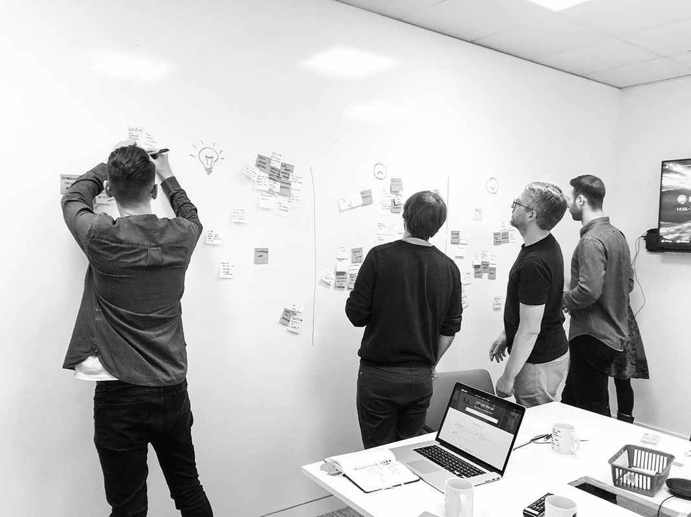
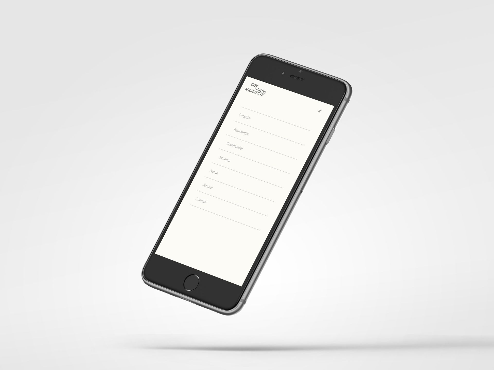

Work Experience
Design & Leadership: 2015 - Today
Ocado Smart Platform
“Ocado has invested over the last fifteen years to create the best grocery e-commerce solution in the world. From our user-friendly mobile interface to our highly efficient automated warehouse technology, we can now offer this best-in-class customer experience and highly efficient end-to-end supply chain solution to retail partners globally. As a solutions business we are entirely focused on helping our partners build winning grocery e-commerce businesses in their markets.”
― Luke Jensen, CEO - Ocado Smart PlatformBuild and lead
a multi-disciplinary UX team (Researchers, Architects, Designers and UI Engineers).Responsible
for all aspects of UX and the UI design of the Ocado Smart Platform (Desktop and Mobile B2B and B2C applications).Defined and executing
the user experience vision, strategy, team's code of conduct, user-centered design direction and guidelines.Enriching
a strong technology-based culture by injecting a more user-centered and problem-solving mindset and process.Liaise
with designers, developers and product owners to implement new conceptual ideas.Facilitating
multidisciplinary teams' collaboration.
 



My story
Three years have passed since I started working on the Ocado Smart Platform. From one man trying to kick off a more user-centred approach to problem-solving while delivering design outcomes, we are now a high-level multi-skilled UX team.
It has been an exciting, challenging and rewarding journey – a course full of obstacles and learning.
I was leading the UX efforts for the Ocado General Merchandise Shops (we were just about launching Fabled.com) when I was invited to look into Ocado Technology’s latest business challenge. From a user perspective, because of its inconsistency in functionality and visuality, the Ocado Smart Platform was not perceived as one product or one suite of products. As such, it could not yet be regarded as a sellable product.
To tackle this business matter, I partnered a front-end engineer to deliver an MVP of a design system (named Aeris). In not much time, we were able to build a functional and professional-looking kit of components and patterns. Adopting Aeris made OSP systems appear as though they were part of one family suite.
Soon after, from just helping out, I was asked to move full time to OSP with the responsibility of building a team and leading the user experience and design forces.
By continuously observing and listening to the Aeris first users, we learned that, while we were improving it visually and giving it renewed functionality, we were making it harder for the developers to implement and maintain it.
It became apparent that the UX team could not develop Aeris alone. Today, we have a new ad hoc group made up primarily of passionate front-end engineers working on transforming a beautiful design system into a more distributive front-end solution for all OSP B2B applications.
In the meantime, the building of a UX team continued, and I was able to start transferring ownership and responsibilities to a broader group of motivated individuals. We defined our role and goal within the business, identified organisational and product challenges, designed a problem-solving framework and defined a code of conduct. Why a code of conduct? Because the strength of the UX team is measured by how healthy the relationship is between designers and the rest of the organisation, so we need to be aware that our behaviour, more than our design outcomes, strongly determines our success.
Pushing design in a tech-savvy environment such as Ocado Technology remains a tough challenge today, but one that our team was and will always be willing to tackle. We regularly conduct workshops, lead and facilitate design sprints and share our learning, facts and stories with the Ocado community through initiatives such as the UX Academy. We have a programme for software engineers and product owners who are looking for experience working as a UXer for a period of time. In OSP Systems, we are currently satisfying the design need of more than twenty autonomous development teams.
Success stories

Aeris: the Design System for OSP
We built Aeris, an OSP-branded development framework that helps create consistent, responsive layouts using user-friendly patterns and code for all our diverse contexts. To satisfy the high demand to use it appropriately, the Aeris team, made up of front-end engineers and designers, is currently updating Aeris to facilitate its fit with applications built on different frameworks such as React and Angular. We are delivering a state-of-the-art and well-documented tool that will shape design while cutting the development time of all our products.
OSP journey mapping
The product team raised a concern: how can we clearly explain internally and externally how OSP works? We created a tube map of the platform, incorporating all the high-level actions that must be taken by the retailer and shopper to make OSP efficient. Every new functionality will be regularly added to the map, and a beautiful, enormous printed wall version is easily accessible in our offices across Europe (often used efficiently in workshops and brainstorming).
UX Academy
Our mission is to contribute positively to the growth of Ocado Technology’s culture by injecting a more user centred mindset across the business. We are trying to fulfil our mission by regularly planning events such as talks and workshops where we discuss UX principles and share our learning and results. To reinforce collaboration and empathy (both ways), we started a UX work experience programme, where developers and product owners have the opportunity to work full time as a UXer for a typical time of two weeks.
CMS, Payment, Store Pick, Van Delivery and many more apps.
Regardless of the UX team size, we were able to meet the minimum requirements of more than twenty B2B applications and deliver major mobile apps such as Store Pick and Delivery. Each UXer was able to take responsibility for more than one system at a time and significantly contributed, through effective planning, workshops and collaboration, to make the OSP a user-friendly product.